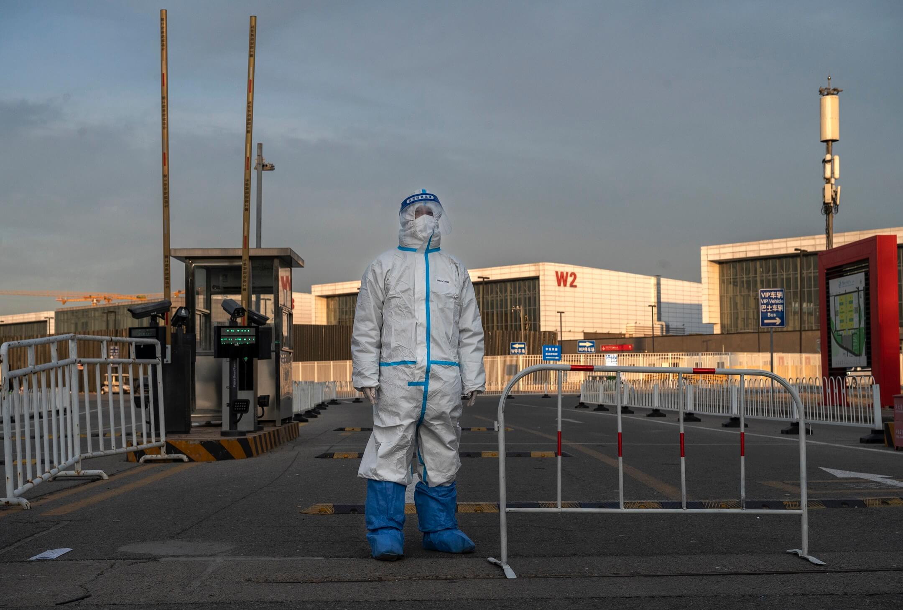
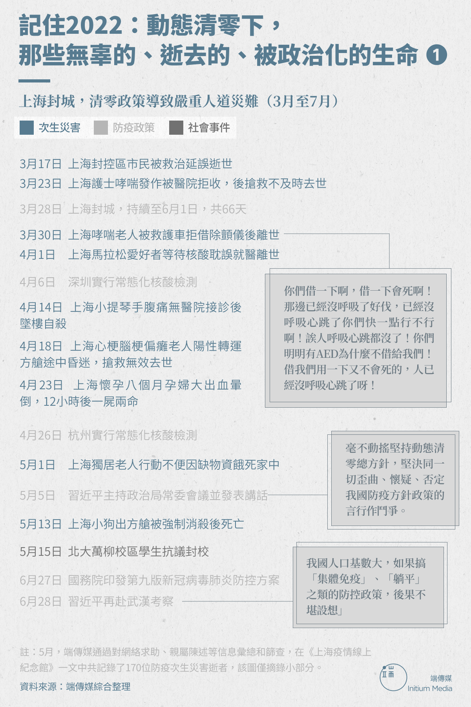
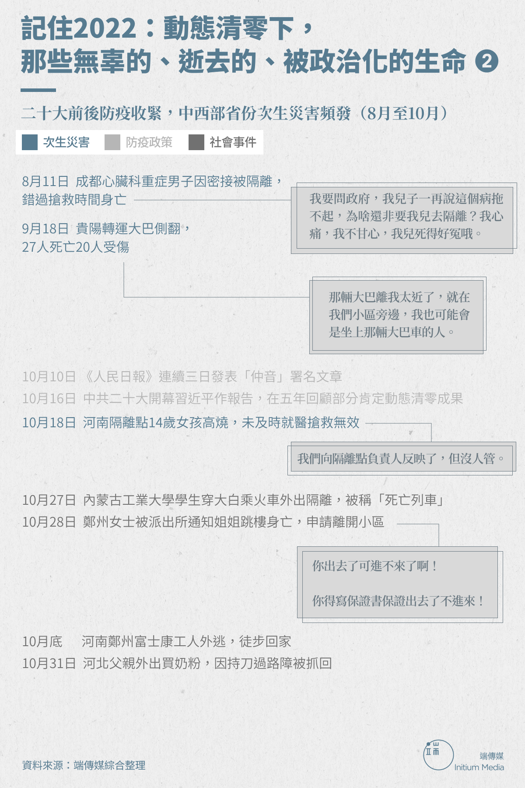
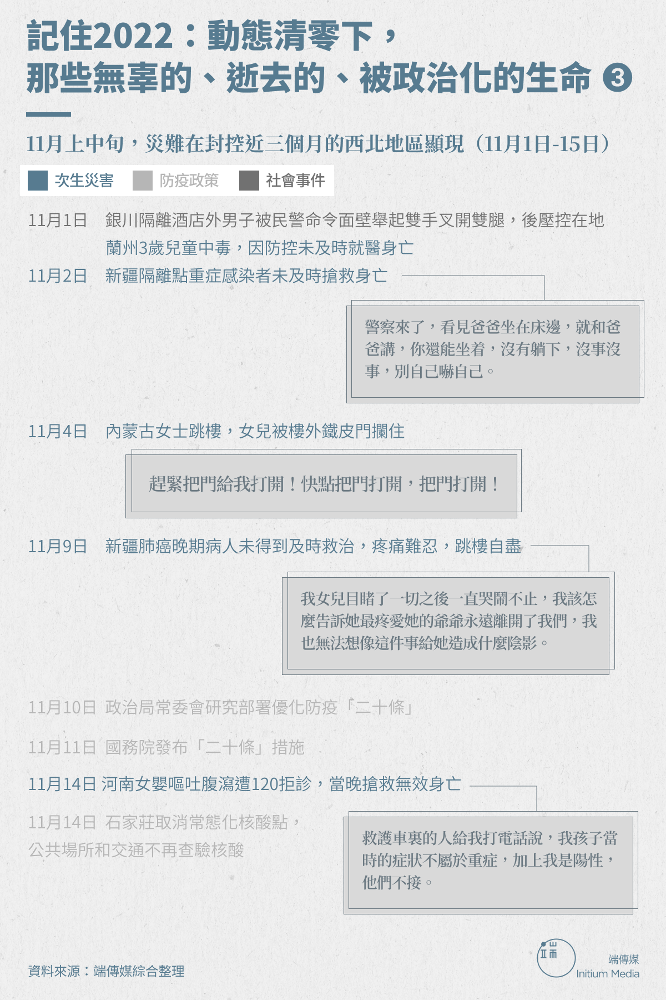

記住2022：動態清零下，那些無辜的、逝去的、被政治化的生命
Table of Contents
在為達「清零」不惜代價的政策高壓終將結束之時，我們不能忘記過去一年因此造成的無數起悲劇。

Figure 1: 2022年12月7日，中國北京，一名穿保護衣的工作人員在一個隔離設施外看守。攝：Kevin Frayer/Getty Images
端傳媒記者陳姝玥、設計師郭瑾燁 發自新加坡
刊登於 2022-12-30
2022年12月7日，中國「新十條」政策發布，防疫措施一夜轉彎。核酸檢測、健康码、行程卡不再是出行必備，普通民衆被「賦予」居家隔離的權利，不再因可能被强制隔离而产生恐慌，也不再有「大白」闖入家中消殺。
政策急轉，卻已經無法帶回因「動態清零」而失去的生命。過去這一年，在等待核酸檢測報告、社區出門證中，在面對遲遲未到的急救車、停診或拒診的醫院 中，在強制方艙隔離和入戶消殺的擔憂中，在深夜轉運的大巴和着火的高層住宅樓中，也在因缺乏公衆科普而害怕染上新冠的恐懼中⋯⋯一日一日，人們艱難維繫。 有人因此在病痛中逝世、在睡夢中離開、在絕望中自殺，無辜的人們，成為了無數防疫次生災難的受害者。
從1月1日西安孕婦被醫院以核酸結果過期為由拒絕入內而流產開始，2022是被「災難」層層圍住的一年。在強制方艙隔離、醫院停診拒診、搭建鐵皮 牆、限制出行等封控政策之下，延誤救治、病痛自殺、轉運事故、撲殺寵物才是2022年中國的「常態」災難。此外，更有普通人與政策執行者之间的數起衝突。
不是所有的次生災害或社會事件都得到了妥善的紀錄，在我們看不見的、聽不到的地方，還有更多因防疫政策帶來的災難、傷害和影響深遠的困擾，很可能都 不會再出現在公眾眼前。正是因此，我們更要記得這樣的2022。在中國疫情以及防疫政策再次踏入未知水域之時，端傳媒整理、紀錄了過去一年，我們能夠找到 的那些、值得被牢牢記住的名字和事件⋯⋯
年初：上海封城两月，灾难初现

5月，端傳媒通過對網絡求助、親屬陳述等信息彙總和篩查，在《上海疫情線上紀念館》一文中記錄了3至4月份上海170位防疫次生災害逝者。在已核實的90位逝者中，有48人因延誤治療或缺失醫療資源去世，22位為住在老人護理院中的老人，8位為過勞猝死的小區物業經理、保安或志願者。
他們有因急性胰腺炎腹痛入院、為等待覈酸檢測報告延誤救治而去世的24歲年輕人余祖望；在家哮喘發作、被工作單元以防控消殺為由拒收的上海東方醫院 南院護士周盛妮；因長期未腎透析、心肌衰竭、死於ICU病房的77歲老人沈瑞根；請求外賣員為聽障父親送菜、卻被網友認為給予「感謝費」太少而遭網絡暴 力、而後跳樓自殺的虹口區女子；因等待核酸報告、錯過腎衰竭救治時間而去世的經濟學家郎咸平的98歲母親；因心血管藥品耗盡而突發腦梗、救護車遲遲未到、 後搶救無效死亡的75歲老人；因缺少氧氣等醫療資源、多方求助無果後病逝的上海交通大學退休教授吳中南；無醫院接診而腹痛難耐、留下遺書後墜樓自殺的71 歲小提琴手陳順平；高燒不退、醫院相繼拒診停診、後在一醫院等待核酸報告時腦部功能完全衰竭、搶救無效死亡的3歲女孩陳相汝；因腿摔傷無法出門領取物資、 餓死家中的58歲獨居者吳曉偉……
端傳媒也報導了上海養老院染疫、運轉不力、管理混亂的情況。臨時招聘進入東海老年護理醫院的新護工曾向端傳媒稱，多位老人未能得到正常護理而死亡。據老人家屬向端傳媒透露，至今仍有少數家屬未和護理院達成協議，去世老人仍未得到妥善安置。
除了被延誤治療的逝者、混亂失守養老院中的老人，封控中的上海也有着無數無家可歸的人。端傳媒也報導了上海外來勞工的艱難處境，他們或露宿於虹橋火車站、或被欺騙進入染疫的護理院、或輾轉於多個臨時收容所、或以外賣員的身份在外流浪。
在清零政策下，中國的診所、門診部、村衛生室等醫療機構並不具備接診發熱病人的資格。4月，河南、河北等地有村醫「違規」接診有咳嗽、發熱等症狀的 病人，且未上報有關部門，被處以行政拘留或刑事拘留。4月23日上午，河北省邢台市一男子有發熱症狀，其妻向村幹部謊稱「救護車來不了，需要自行去醫院就 診」，開取出入證明。翌日，邢台市南和區公安局發布通報，稱二人「騙取出入證明」「已構成『拒不執行人民政府在緊急狀態下依法發布的決定、命令』的違法行 為」，將依法受理案件並開展調查工作。
5月初，江蘇徐州睢寧縣防疫人員入戶消殺的視頻引起不少恐慌。視頻中，身穿防護服的工作人員往櫥櫃、冰箱、沙發、衣服上噴灑消毒水，並將冰箱中的食 物全部扔進黃色垃圾袋。據中國新聞週刊報導，該縣宣傳部工作人員回應稱，其消殺行為是「完全按照省市專家的指導意見，結合國家第九版消殺要求」，指把冰箱 的蔬菜食品扔了是「正常的處置方式」，還表示為隔離回家的居民補償了食品和消毒用品。上海市環境整治消殺工作專班副組長金晨也在5月10日上海疫情防控發 布會上表示，開展入戶消毒是整個疫情防控的重要一環。
5月27日國務院聯防聯控機制新聞發布會上，對於「一人陽性整樓入戶消殺」是否合理的提問，國家衛生健康委疾控局副局長雷正龍表示，消毒是切斷傳染 病傳播途徑的有效措施，各地專業消毒隊伍依法依規對病例居住或活動過的場所做終末消毒，對於個別地方溝通不到位、操作不規範等問題，將加強培訓和監督。
然而，上海的次生災難和此起彼伏的怨言並沒有使中國政府調整「動態清零」政策，反而愈演愈烈。5月5日，習近平在政治局常務委員會會議上發表講話稱：「始終保持清醒頭腦，毫不動搖堅持動態清零總方針，堅決同一切歪曲、懷疑、否定我國防疫方針政策的言行作鬥爭。」
同月10日，世界衛生組織總幹事譚德塞曾提出，不認為「清零」是可以持久進行的。11日，外交部發言人趙立堅在例行記者會上回應記者提問時稱，「中 國政府從自身國情出發制定並實施『動態清零』政策」，「中國完全有基礎、有條件、有能力實現『動態清零』」，「我們也有充分的信心打贏疫情防控這場硬仗， 為全球團結抗疫作出更大貢獻」。6月28日，習近平自疫情以來第二次赴武漢考察，亦重申「堅持外防輸入、內防反彈，堅持動態清零」。
入戶消殺的恐懼仍在其他城市蔓延。7月15日，網傳廣州邦華·星際小區業主在酒店隔離期間，一百多戶人家被社區強行拆鎖破門。據天目新聞報導，物業 工作人員表示，因收到「有人躲在家中」的消息，疾控中心、街道、居委、派出所四個部門共同決定，將確診病例的上下三層房門強制破鎖，目的之一是消殺，另外 也為防止有人躲在家中不出來。
二十大前後：防疫收緊，各地次生災害顯現

8月，隨着各地疫情相繼反彈，海南三亞、新疆烏魯木齊、新疆伊寧、浙江義烏、青海等多地陸續進入「靜態管理」狀態。據浙江省義烏市公安局8月7日通報，當地兩家診所負責人郭某、範某曾「違規診治發熱病人」，被以「涉嫌妨害傳染病防治罪」立案偵查。
據端傳媒此前統計，9月至少有13省24城實施、延長或者解除靜態管理，時間長短不一。貴陽自9月5日起已進入「靜默」狀態，9月18日凌晨，一輛轉運隔離人員的大巴側翻，27人死亡，20人受傷，打破了封控下的平靜。然而，這場災難並沒有改變中國「動態清零」的決心。
10月10日，二十大召開前一週，《人民日報》連續三日以筆名「仲音」發布評論文章，称「增強對當前疫情防控政策的信心和耐心」、「『動態清零』可 持續而且必須堅持」、「『躺平』不可取，『躺贏』不可能」。10月16日，二十大開幕式上習近平的報告中也強調其政績，「面對突如其來的新冠肺炎疫情」， 「堅持動態清零不動搖」，「最大限度保護了人民生命安全和身體健康，統籌疫情防控和經濟社會發展取得重大積極成果」。
同一時期，10月16日河南汝州市集中隔離點一名14歲女孩發高燒，17日下午兩點多病情惡化，渾身抽搐、發抖、沒有意識，晚上七點多送醫救治，18日凌晨三點多因腦炎和肺水腫離世。
10月21日，新疆烏魯木齊一位尿毒症母親因延誤多日未及時轉院搶救身亡。10月23日，貴州省畢節市三名村民省外返鄉後未主動報備、居家隔離， 「違反規定私自外出」，一名村醫接診發熱病人時未及時上報轉診發熱門診，四人被刑事拘留。10月底，河南鄭州市富士康工廠內爆發疫情，工人陸續外逃、徒步 回家。此時，新疆、西藏、青海、甘肅等西部省份也陸續傳出封控多時、限制出疆、缺乏物資、沒有收入、醫院爆滿、無法就診等消息，引發輿論關注。《今天繼續 讓大家看到西寧網友的心聲》《再說幾句西寧》《也看看我們西北人民吧》等微信推送在朋友圈熱傳。
11月：西北多地被封控三個月，災難頻發

進入11月，各地次生災難接連頻發。僅是上旬的十天，就有蘭州三歲兒童中毒、庫爾勒疑似重症感染者延誤救治、呼和浩特女士跳樓、烏魯木齊肺癌病人自盡等悲劇傳出。
11月8日，新疆庫爾勒地區一微博用戶發文稱，其父親感染新冠後在10月25日被送至隔離點，26日咳嗽嚴重、講話疲累、呼吸困難，撥打120後救 護車沒有來，多次請求轉院卻不予受理。11月1日晚7點左右，其父親昏迷，醫生檢測血壓後表示沒事。父親恢復意識後，9點多再次昏迷，送至醫院搶救，但於 2日凌晨5點多離世。事後，相關部門公開表示已成立專項調查組開展調查。11月13日，受害者女兒在微博更新進展，稱12日市委副書記私下向家屬表示，他 們反應的情況基本屬實，「就是家屬了解的那樣」，但未出具調查報告來證實。12月6日，其父親火化。
11月10日，中共中央政治局常務委員會召開會議，研究部署「二十條」措施。習近平主持並發表講話，仍指出要「堅定不移堅持人民至上、生命至上，堅 定不移落實『外防輸入、內防反彈』總策略，堅定不移貫徹『動態清零』總方針。」翌日，國務院發布優化新冠肺炎疫情防控的「二十條」措施。
實際上， 11日出台的「二十條」措施並沒有在各地執行，在行政區域全員核酸檢測、封控低風險小區等「一刀切」案例仍是普遍。
幾天後，11月14日，河南省4月大的女嬰和父親作為密接者在酒店隔離時，嘔吐腹瀉、不願進食，當天中午其父親兩次求助120。救護車到達後為二人 做抗原檢測，父親陽性，孩子陰性。隨後救護車以孩子不是重症為由拒診。後酒店聯繫定點醫院，於23點左右將女嬰送至醫院，但當晚女嬰體溫驟降，搶救無效。

11月18日，廣州南沙體育館方艙內一名新冠感染者因害怕感染而自縊身亡。11月20日，安徽省亳州譙城區十河鎮呂剛衛生室、湯陵辦事處劉運虎衛生 室被指「違反規定」接診陽性患者，全區所有個體診所、社區衛生服務站、個體衛生室被要求暫時關閉5天，不得接診和出售藥品，零售藥店暫停銷售「一退兩抗」 藥品。
24日，新疆烏魯木齊一場大火，將清零政策下的悲劇推至高潮，越來越多的人終於站了出來，引發了全國多地的抗議封控潮。與抗爭同時的，是11月底仍陸續傳出的災難。新疆阿勒泰7名返鄉轉移工人在極寒天氣中遇難，新疆多地因封控延誤牛羊轉場、牧民牲畜在暴雪天氣中失蹤，蘭州大學51歲老師疑出方艙後跳樓，河北滄州方艙建設工人觸電身亡……
2022年最後一個月，在藥物等醫療資源未準備充足的情況下，中國政府突然捨棄「動態清零」，全面放開，長達三年的入境隔離政策也將在2023年1 月8日結束。急速轉彎的政策最先衝擊的是醫院，急診、發熱門診承壓，120救護車運力不足，醫護人員相繼感染，措手不及。同時也有不少老人去世、殯儀館需 排隊等候的消息傳出。
在為達「清零」不惜代價的政策高壓終將結束之時，我們不能忘記過去一年因此造成的無數起悲劇。更要警醒看到，仍有著許多本可阻止的災難，在一件件繼續發生。
實習記者佟琪、鄧曉雯對本文亦有貢獻
本刊載內容版權為端傳媒或相關單位所有，未經端傳媒編輯部授權，請勿轉載或複製，否則即為侵權。